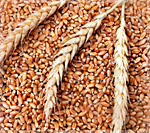
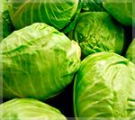

Our products

- Carrot
- are a good source of several vitamins and minerals, especially biotin, potassium, and vitamins A (from beta carotene), K1 (phylloquinone), and B6.

- Eggplants
- Eggplants contain vitamin C, which is important for heart health. Eggplants contain vitamin K, which is important for heart health.

- grian
- small-grained, annual, warm-weather cereals belonging to the grass family.

- cucumber
- is a nutritious fruit with a high water content. Eating cucumber may help lower blood sugar, prevent constipation, and support weight loss.

- maize
- Maize is a staple food for almost half the population of sub-Saharan Africa and is important for its carbohydrate, proteins, iron, vitamin B, and minerals.

- african pepper
- a good source of vitamins A, C, and E, as well as potassium, fiber, and folic acid.

- starwberies
- are a sweet fruit low in sugar and calories but high in fiber, vitamin C, and other antioxidants that support your health.

- cabbages
- is highly nutritious vegetable. Cabbages are rich in vitamin C, fiber, and vitamin K. They may help with heart and digestive health.

- pumpkin
- is an excellent source of vitamin A, with one cup providing 245% of our recommended daily intake. Vitamin A is important to preserve vision.